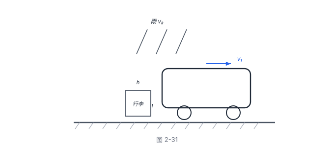
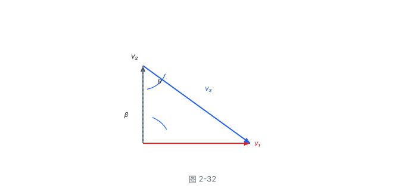
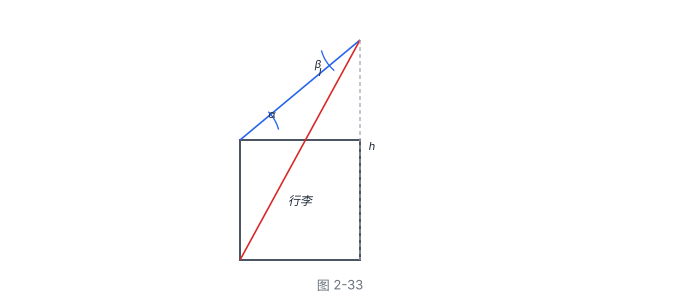
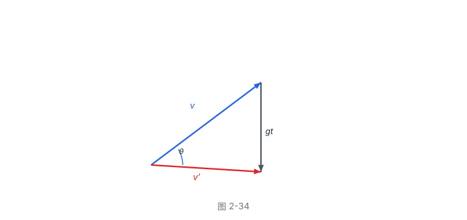
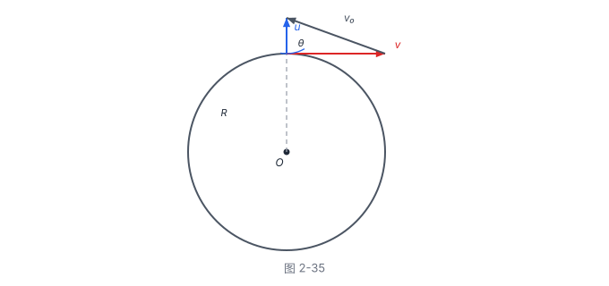
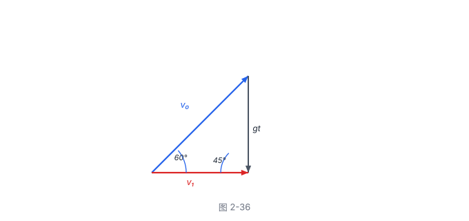
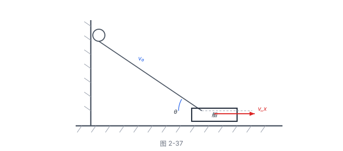
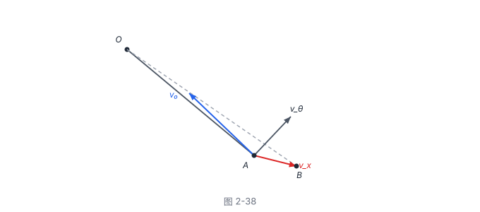

三、用速度矢量三角形法巧解运动学问题
例 1车速多大时行李不淋湿
如图 2-31 所示，一辆汽车在雨中沿直线行驶，其速率为 \( v_1 \)，下落的雨滴的速度方向偏于铅直线方向 \( \theta \) 角，速率为 \( v_2 \)，若车后有一长方形的行李，问：车速 \( v_1 \) 为多大时此行李不会被雨淋湿？

解以车为参照物，则雨滴的运动是以速度 \( v_1 \) 向左匀速运动和以速度 \( v_2 \) 斜向下匀速运动的合运动，设其合速度为 \( v_3 \)。作 \( v_1 \)、\( v_2 \)、\( v_3 \) 的矢量三角形如图 2-32 所示，根据行李的几何尺寸作图 2-33，由此可以看出，行李不会被雨淋湿的条件是 \( \beta \leq \alpha \)。


在图 2-32 中，由正弦定理得
得 \( \dfrac{v_1}{v_2} = \dfrac{\cos(\theta - \beta)}{\sin\beta} \)，即
对 ① 式两边取余切，不等号变向，则得 \( \cot\beta \geq \cot\alpha \) ③。由图 2-33 可以看出 \( \cot\alpha = \dfrac{L}{h} \) ④。将 ②、④ 式代入 ③ 式中得
所以
例 2证速度经过 v/(gsinθ) 后转 90°
试证明：如果做斜抛运动的物体在某一时刻的即时速度大小为 \( v \)，方向和水平面成 \( \theta \) 角，那么经过时间 \( \dfrac{v}{g\sin\theta} \) 后，它的即时速度一定和原来的方向垂直。
证明设速度 \( v \) 经时间 \( t \) 后变为 \( v' \)，其速度变化量 \( \Delta v = gt \)，方向竖直向下。作速度的矢量三角形如图 2-34 所示。由余弦定理可知

将 \( gt = \dfrac{v}{\sin\theta} \) 代入，得
所以
即 \( v' \perp v \)。故 \( v \) 经过时间 \( \dfrac{v}{g\sin\theta} \) 后，它的速度一定和原来的方向垂直。
例 3绕池奔跑抛石落中心
有一座圆形水池，它的半径为 \( R \)，有人绕池以线速度 \( v \) 奔跑，同时距水面高 \( h \) 处水平抛出一块小石块，使石子恰好落在池的中心，如图 2-35 所示。试求抛出石子的初速度 \( v_0 \) 的大小和方向。

解要使石子落在池的中心，抛出的初速度 \( v_0 \) 和奔跑的速度 \( v \) 的合速度 \( u \) 必须沿半径方向。作 \( u \)、\( v \)、\( v_0 \) 的矢量三角形如图 2-35 所示。
因为石子落在池中心，所以石子平抛运动的水平距离等于 \( R \)，有
又
所以
石子的初速度大小为
石子初速度的方向为
所以
例 41 秒末速度偏下 45°
以仰角 \( 60^\circ \) 弹出一物体，如图 2-36 所示，第一秒末该物体速度方向水平偏下 \( 45^\circ \)，则该物体的初速度为多大（取 \( g = 10\,\mathrm{m/s^2} \)）？

解物体以初速度 \( v_0 \) 弹出后，第 1 秒末的速度为 \( v_1 \)，第 1 秒内的速度变化量为 \( gt \)。作 \( v_0 \)、\( v_1 \)、\( gt \) 的矢量三角形，依据正弦定理有
所以
例 5绳拉船的速度分解
某人用绳通过定滑轮拉小船，如图 2-37 所示，设某时刻拉绳速度为 \( v_0 \)，绳与水平方向的夹角为 \( \theta \)，求此刻小船水平运动的速度 \( v_x \)。

解设小船在题给时刻后的极短时间内由 \( A \) 点运动到 \( B \) 点，如图 2-38 所示。\( A \) 点的运动可以分解为沿绳方向的分运动和绕 \( O \) 点转动的分运动。故船的速度 \( v_x \) 可以分解为沿绳方向的 \( v_0 \) 和垂直绳的方向的 \( v_\theta \)，有
